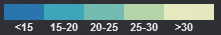

Honeywell Marketing Data Explorer
Prospects on the go.
Municipalities
Public K-12
Private K-12
Higher Education
Hospitals
DOD Installations
All Layers
Marketing Scores

Map points are sized relative to category population size